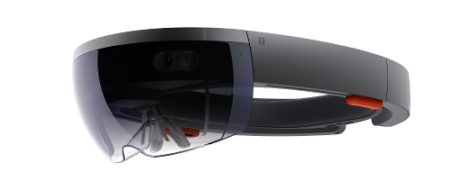

We are Mixed Reality specialists, offering design, production and installation of high quality, innovative experiences.

As an award winning creative technology team, Fracture also offer consultancy and troubleshooting on the creative, user-experience and technical challenges within this new medium.
Platform-agnostic and with expertise on Hololens, VR, AR, Mobile, Console and PC, we have made games and experiences on all these platforms
LAST 18 MONTHS